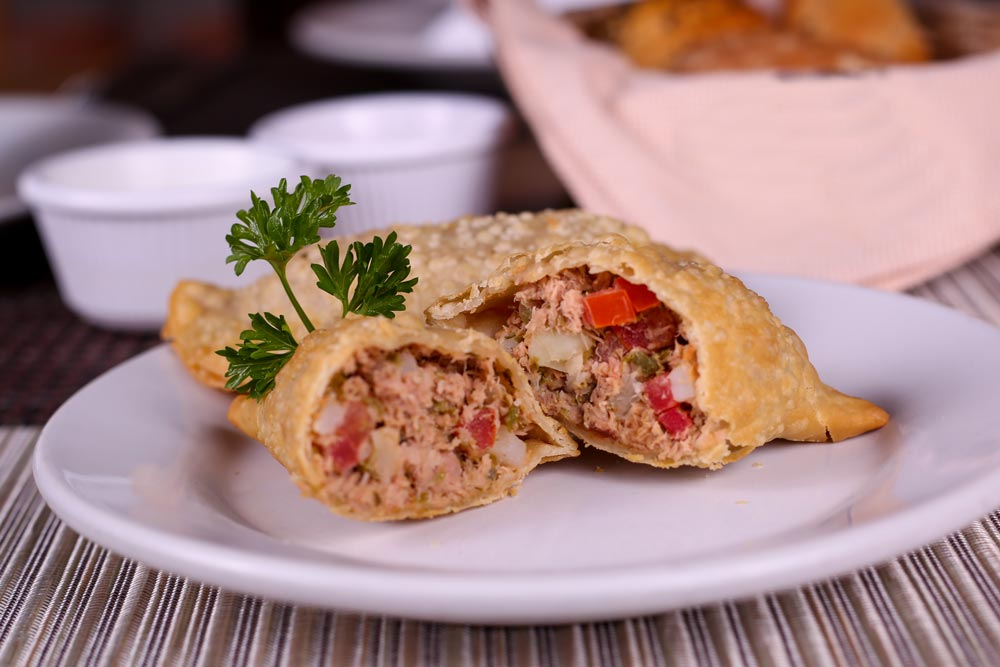

Empanadas de Vigilia

Bienvenidos y bienvenidas a Paulina Cocina! Pónganse cómodos, agarren una hoja y una lapicera porque el receta de hoy es imperdible. Esta comida considerada por muchos, la parte más rica de la Semana Santa: EMPANADAS DE VIGILIA!
¿Por qué se llaman empanadas de vigilia? ? Su nombre se debe a que es un producto creado con las limitación de carne vacuna o de cerdo que existen en estos días de festividad. De ahí su nombre, empanadas de Vigilia.
Empezando la previa a estas fechas, vamos a estar resolviendo muchas dudas sobre esta comida que nos encanta.
Ingredientes
- 2 latas de atún
- 1 tomate picado
- 1 cebolla picada
- 1 puerro picado
Procedimiento
- Abrir las latas de atún y sacar el líquido. Si es atún en aceite, se puede aprovechar el aceite y ponerlo a calentar en una sartén.
- Cuando el aceite esté caliente, saltear la cebolla picada y el puerro. Si es necesario, se puede añadir un poco más de aceite para que estos ingredientes no se quemen.
- Una vez que la cebolla se transparente, incorporar el pimiento rojo y el pimiento verde. Continuar cocinando. Añadir sal y pimienta al gusto.
- Por último añadir el tomate picado cuando los pimientos estén tiernos y espolvorear pimentón al gusto (dulce o picante). Cocinar un minuto más y agregar el atún desmenuzado y los huevos cocidos picados.